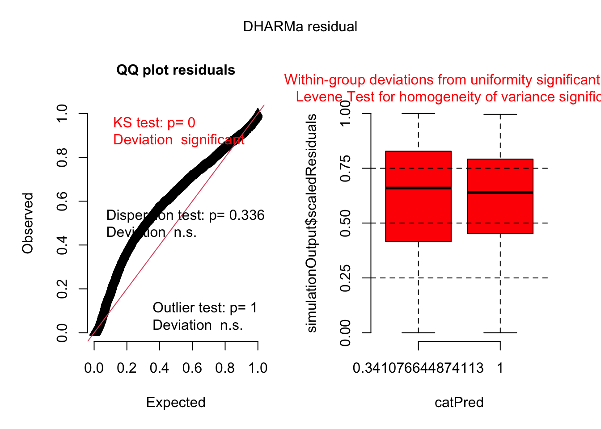
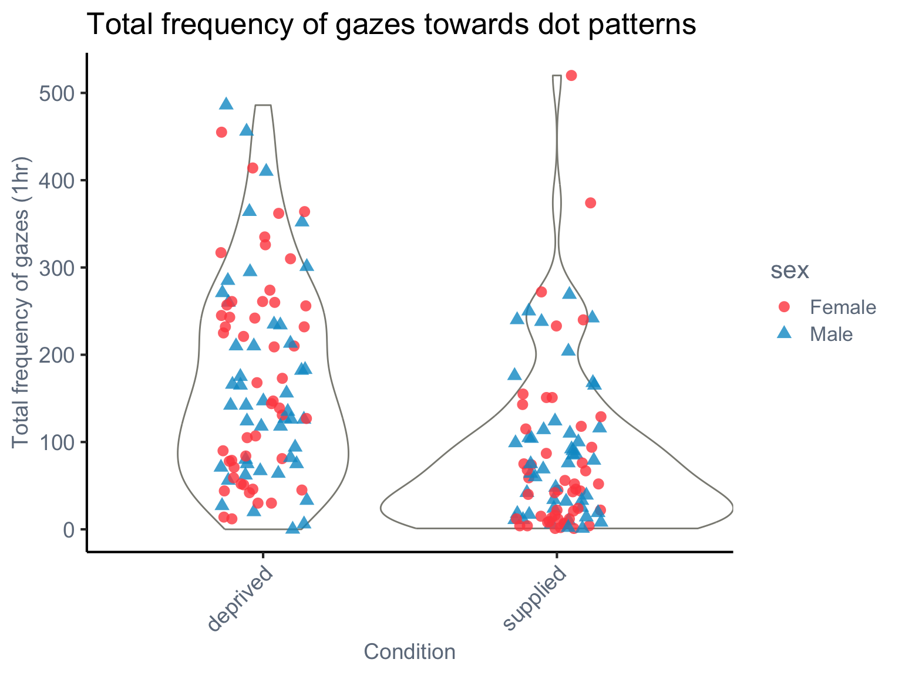
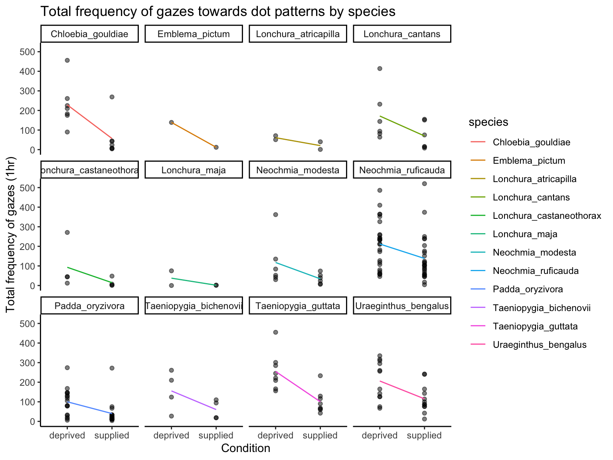

your-project-folder/
├── online_tutorial.qmd
├── data/
│ └── (CSV files)
└── Rdata/
└── (RDS files from Google Drive)Location–scale models in ecology: handling heterogeneity in continuous, counts and proportions
step by step online tutorial
If you have any questions, errors or bug reports, please feel free to contact Ayumi Mizuno (amizuno@ualberta.ca / ayumi.mizuno5@gmail.com).
Some of the models in this tutorial take a long time to run. To make the tutorial faster and easier to follow, we have precomputed selected models and saved them as .rds files.
If you would like to re-run the code yourself and reproduce the results shown in the tutorial, please make sure to do the following:
-
Download the following files:
online_tutorial.qmd (the source file for this website)
All datasets in the data folder
The precomputed .rds files from Google Drive Google Drive link: https://drive.google.com/drive/folders/1CvshmYMowXSB9MdbCprP1LP7llZNxIbe?usp=drive_link
Create a folder structure like this on your machine:
- Adjust file paths if your folder structure is different. We use
here::here()to help make paths more portable, but if you move or rename files/folders, make sure to update functions likereadRDS()orread.csv()accordingly:
You will see similar code snippets throughout the tutorial. Feel free to modify them based on your own setup. If everything is placed correctly, the .qmd file should run without any issues.
Introduction
This tutorial provides a step-by-step guide to applying location-scale models in ecology, evolution, and environmental sciences. We focus on practical applications and demonstrate how to implement these models in R using the glmmTMB and brms packages.
After a brief introduction to both modeling frameworks, we present worked examples using real datasets. In the final section, we also discuss approaches for model comparison and selection.
Preparation
Load required packages
Our tutorial uses R statistical software and existing R packages, which you will first need to download and install.
This tutorial makes use of several R packages for data manipulation, model fitting, diagnostics, visualisation, and reporting:
dplyr,tibble,tidyverse- for efficient and tidy data manipulation.brms,glmmTMB,arm- for fitting generalised linear mixed models.cmdstanr- interfaces with the CmdStan backend to accelerate Bayesian sampling via within-chain parallelisation. is a C++ library for Bayesian inference, in order to enable within-chain parallelisation to speeding up the sampling process.DHARMa,loo,MuMIn- for model diagnostics, cross-validation, and multi-model inference (note that bothlooandMumincontain functions with the same names, so call them with explicit namespaces, e.g.loo::loo( )).ggplot2,patchwork,bayesplot,tidybayes- for flexible and publication-ready visualisations.gt,kableExtra,knitr- for creating clean tables.here- for consistent file path management across projects.ape,TreeTools- for phylogenetic analyses and tree manipulation.
# Load required packages
pacman::p_load(
## data manipulation
dplyr, tibble, tidyverse,
## model fitting
ape, arm, brms, broom.mixed, cmdstanr, emmeans, glmmTMB, MASS, phytools, rstan, TreeTools,
## model checking and evaluation
DHARMa, loo, MuMIn, parallel,
## visualisation
bayesplot, ggplot2, patchwork, tidybayes,
## reporting and utilities
gt, here, kableExtra, knitr
)
glmmTMB vs brms
glmmTMB is a powerful and flexible R package for fitting generalized linear mixed models (GLMMs), including models with random effect structures and scale (dispersion) part. It is built on the Template Model Builder (TMB) framework, which allows fast and efficient maximum likelihood estimation even for large and complex models.
brms is an R package that allows users to fit Bayesian generalized (non-)linear multilevel models using the probabilistic programming language Stan. It provides a user-friendly formula syntax similar to that of lme4 or glmmTMB, and supports a wide range of distributions, link functions, and advanced model components, including location-scale modeling.
Both packages are suitable for fitting location-scale models and are widely used in ecology and its related fields. Therefore, we selected them to illustrate how location-scale models can be practically applied in real data analysis.
While brms is a powerful and flexible package for Bayesian regression modeling, some readers may not be familiar with its usage. Below, we provide a brief introduction to fitting models using brms, focusing on the basic location-scale structure and key functions relevant to our analysis. You can also find some examples each section…
If you get stuck or are unsure about something, it might be helpful to check the below:
This example shows how to fit a simple location-scale model, where both the mean (\(\mu\)) and the variability (\(\sigma\)) of a continuous outcome variable \(y\) are modeled as functions of a predictor \(x\).
# Example dataset
# y is continuous response, x is a predictor
# specify the model using bf()
formula1 <- bf(
y ~ 1 + x, # location part
sigma = ~ 1 + x # scale part - specified by sigma
)
# generate default priors based on the formula and data
default_priors <- default_prior(
formula1,
data = dat,
family = gaussian()
)
# fit the model - you can change N of iter, warmup (and thin), and also chains.
m1 <- brm(formula1,
data = dat,
family = gaussian(),
prior = default_priors,
iter = 2000, # total iterations per Markov-chain (i.e., how many posterior samples are drawn, including warm-up)
warmup = 1000, # number of early draws used only for adapting the sampler (step-size, mass matrix). These samples are discarded
thin = 1, # keep every n-th post-warm-up draw. 1 means keep all draws
chains = 2, # number of independent MCMC chains run in parallel. Provides a convergence check (via Rhat)
)
summary(m1)After fitting the model, you can use summary(m1) to inspect the estimated coefficients and sigma with 95% Credible Intervals, along with diagnostic statistics such as Rhat and effective sample size. To better understand how to interpret the model output, please refer to the “Bonus - brms” part in the next section.
Parallel Processing
Before fitting our models with brms, we configure some global options to optimize sampling speed using parallel processing:
-
parallel::detectCores(): This function automatically detects the number of logical CPU cores available on your machine. This is a convenient way to ensure your code adapts to different computing environments. -
options(mc.cores = parallel::detectCores()): The mc.cores option is a global setting primarily used by rstan (the engine behind brms). It controls the number of MCMC chains that will be run in parallel. By setting it todetectCores(), you are telling brms to run as many chains concurrently as your CPU allows, significantly speeding up the overall sampling process. -
options(brms.threads = 6): The brms.threads option specifies the number of CPU threads that Stan’s internal operations can utilize within a single MCMC chain. This enables within-chain parallelisation, further accelerating computations, especially for complex or large datasets. The value 6 is an example; you can adjust this based on your specific CPU architecture and memory.
These settings are crucial for making Bayesian model fitting with brms more efficient, particularly for complex models or large datasets.
parallel::detectCores()[1] 12options(mc.cores = parallel::detectCores())
options(brms.threads = 6) # Set global defaultSpecifying the Scale Component
Here’s how the scale component is handled in glmmTMB and brms, along with common parameter names for various distributions:
| Distribution | Scale Parameter (Example) |
glmmTMB Specification |
brms Specification (Example) |
|---|---|---|---|
| Gaussian | \(\sigma\) | dispformula = ~ ... |
bf(..., sigma ~ ...) |
| Negative Binomial | \(\theta\) | dispformula = ~ ... |
bf(..., shape ~ ...) |
| Conway-Maxwell-Poisson | \(\nu\) | dispformula = ~ ... |
bf(..., nu ~ ...) |
| Beta-Binomial | \(\phi\) | dispformula = ~ ... |
bf(..., phi ~ ...) |
Note: In glmmTMB, dispformula is generally used to model the dispersion or scale parameter, regardless of its specific Greek letter notation, which varies by distribution.
The scale part varies depending on the distribution: for example, \(\sigma\) for Gaussian or \(\theta\) for negative binomial, \(\nu\) for Conway–Maxwell–Poisson, \(\phi\) for beta- binomial distribution (see the main text).
Fixed-effects location–scale model (model 1)
Model 1 is a fixed-effects location-scale model, which allows us to model both the mean (location) and variance (scale) of a response variable simultaneously. This is particularly useful when we suspect that the variance of the response variable may differ across groups or treatments.
Dataset overview
This dataset comes from a study by Cleasby et al. (2011), which investigated the effects of early-life food supplementation on adult morphology in a wild population of house sparrows (Passer domesticus). In particular, we focus on adult tarsus length as a measure of skeletal size. The dataset includes adult birds that either received supplemental food as chicks or not, and compares their tarsus length by treatment and sex.
Questions
- Does early-life food supplementation increase adult size? Specifically, does it increase the average tarsus length in adulthood?
- Does early-life food supplementation lead to lower variation in adult tarsus length?
- Are there sex-specific effects of food supplementation? Do the effects on mean or variance differ between males and females?
Variables included
The dataset includes adult birds that either received supplemental food as chicks or not, and compares their tarsus length by treatment and sex. We use the following variables:
Visualise the datasets
The plot shows how adult tarsus length varies by treatment (early-life food supplementation) and sex. Boxplots summarise the central tendency and spread, while the jittered points reveal the distribution of individual values. As shown in the plot, there is a clear tendency for reduced variability in the male treatment group (Fed), suggesting that early-life food supplementation may lead to more canalised development in males.
# load the datasets ----
dat_tarsus <- read.csv(here("data", "SparrowTarsusData.csv"), header = TRUE)
ggplot(dat_tarsus, aes(x = Treatment, y = AdTarsus, fill = Sex)) +
geom_boxplot(outlier.shape = NA, alpha = 0.5, position = position_dodge(width = 0.8)) +
geom_jitter(
aes(color = Sex),
size = 2, alpha = 0.7,
position = position_jitterdodge(jitter.width = 0.2, dodge.width = 0.8)
) +
scale_fill_manual(values = c("Male" = "#1f78b4", "Female" = "#e31a1c")) +
scale_color_manual(values = c("Male" = "#1f78b4", "Female" = "#e31a1c")) +
labs(title = "Adult tarsus length by treatment and sex",
x = "Treatment", y = "Tarsus length (mm)") +
theme_classic() +
theme(legend.position = "right")
Run models and interpret results
We fit and compare two types of models to understand the structure of adult tarsus length:
Location-only model: Estimates the mean of adult tarsus length as a function of sex and early-life food supplementation (treatment).
Location-scale model: Estimates both the mean and the variability (residual dispersion) of adult tarsus length, allowing us to examine whether treatment and sex influence not only the average trait value but also its individual variation.
This approach enables us to detect subtle patterns, such as sex-specific canalisation, that may not be captured when modeling the mean alone.
Model fitting
First, we fit a location-only model as the baseline model.
# location-only model ----
## log-transformation was applied to AdTarsus to reduce skewness and stabilize residual variance.
model_0 <- glmmTMB(
log(AdTarsus) ~ 1 + Sex + Treatment + Sex:Treatment,
data = dat_tarsus,
family = gaussian)
summary(model_0) Family: gaussian ( identity )
Formula: log(AdTarsus) ~ 1 + Sex + Treatment + Sex:Treatment
Data: dat_tarsus
AIC BIC logLik -2*log(L) df.resid
-221.0 -210.2 115.5 -231.0 59
Dispersion estimate for gaussian family (sigma^2): 0.00158
Conditional model:
Estimate Std. Error z value Pr(>|z|)
(Intercept) 2.88728 0.01064 271.42 <2e-16 ***
SexMale 0.01043 0.01373 0.76 0.447
TreatmentFed 0.01036 0.01436 0.72 0.471
SexMale:TreatmentFed 0.01353 0.02034 0.67 0.506
---
Signif. codes: 0 '***' 0.001 '**' 0.01 '*' 0.05 '.' 0.1 ' ' 1## to quantify the uncertainty in parameter estimates, we computed 95% confidence intervals using the confint() function.
## this function returns the lower and upper bounds for each fixed/random effect parameters. If a confidence interval does not include zero, it suggests that the corresponding predictor has a statistically significant effect (at approximately the 0.05 level).
confint(model_0) # check 95%CI 2.5 % 97.5 % Estimate
(Intercept) 2.86643380 2.90813203 2.88728291
SexMale -0.01648352 0.03734866 0.01043257
TreatmentFed -0.01779914 0.03850937 0.01035511
SexMale:TreatmentFed -0.02633701 0.05340220 0.01353260We can check the residuals of the model to assess the model fit and assumptions. The Q-Q plot should show points falling along a straight line.
# | label: model0_diagnostics - model1
# plot a q-q plot of residuals to visually assess the normality assumption
# the data points should fail approximately along the reference line
res <- residuals(model_0)
qqnorm(res) # visual check for normality of residuals
qqline(res) # reference line for normal distribution
The residuals mostly follow a straight line in the Q-Q plot, but there are some deviations, particularly at the lower and upper ends. This suggests that the model may not fully capture the distribution of the data, indicating some potential issues with normality or heteroscedasticity.
Then, we fit a location-scale model.
# location-scale model ----
model_1 <- glmmTMB(
log(AdTarsus) ~ 1 + Sex + Treatment + Sex:Treatment, # location part
dispformula = ~ 1 + Sex + Treatment + Sex:Treatment, # scale part
data = dat_tarsus,
family = gaussian
)
summary(model_1) Family: gaussian ( identity )
Formula: log(AdTarsus) ~ 1 + Sex + Treatment + Sex:Treatment
Dispersion: ~1 + Sex + Treatment + Sex:Treatment
Data: dat_tarsus
AIC BIC logLik -2*log(L) df.resid
-224.0 -206.7 120.0 -240.0 56
Conditional model:
Estimate Std. Error z value Pr(>|z|)
(Intercept) 2.88728 0.01006 286.87 <2e-16 ***
SexMale 0.01043 0.01343 0.78 0.437
TreatmentFed 0.01036 0.01566 0.66 0.508
SexMale:TreatmentFed 0.01353 0.01897 0.71 0.476
---
Signif. codes: 0 '***' 0.001 '**' 0.01 '*' 0.05 '.' 0.1 ' ' 1
Dispersion model:
Estimate Std. Error z value Pr(>|z|)
(Intercept) -3.27919 0.18898 -17.352 < 2e-16 ***
SexMale 0.07846 0.24397 0.322 0.74775
TreatmentFed 0.27232 0.25520 1.067 0.28592
SexMale:TreatmentFed -0.95054 0.36139 -2.630 0.00853 **
---
Signif. codes: 0 '***' 0.001 '**' 0.01 '*' 0.05 '.' 0.1 ' ' 1confint(model_1) 2.5 % 97.5 % Estimate
cond.(Intercept) 2.86755650 2.90700935 2.88728293
cond.SexMale -0.01588533 0.03675044 0.01043255
cond.TreatmentFed -0.02033051 0.04104072 0.01035511
cond.SexMale:TreatmentFed -0.02364145 0.05070669 0.01353262
disp.(Intercept) -3.64959165 -2.90879561 -3.27919363
disp.SexMale -0.39971908 0.55664476 0.07846284
disp.TreatmentFed -0.22785555 0.77250192 0.27232319
disp.SexMale:TreatmentFed -1.65885084 -0.24223149 -0.95054117Now we can compare the two models to see if the location-scale model provides a better fit to the data than the location-only model. We can use the anova() function to compare the two models based on their AIC values. Alternatively, we can use the model.sel() function from the MuMIn package to compare AICc values, which is more appropriate for small sample sizes.
# compare models ----
## we can use the anova() function to compare the two models of AIC
## model.sel() from the MuMIn package can be used to compare AICc values.
model.sel(model_0, model_1)Model selection table
cnd((Int)) dsp((Int)) cnd(Sex) cnd(Trt) cnd(Sex:Trt) dsp(Sex) dsp(Trt)
model_1 2.887 -3.279 + + + + +
model_0 2.887 + + +
dsp(Sex:Trt) df logLik AICc delta weight
model_1 + 8 119.976 -221.3 0.00 0.662
model_0 5 115.514 -220.0 1.34 0.338
Models ranked by AICc(x) The results of the location-only model (Model 0) and the location-scale model (Model 1) are summarised below.
| Location-only model | ||||
|---|---|---|---|---|
| Term | Estimate | Std. Error | 95% CI (low) | 95% CI (high) |
| (Intercept) | 2.887 | 0.011 | 2.866 | 2.908 |
| SexMale | 0.010 | 0.014 | −0.016 | 0.037 |
| TreatmentFed | 0.010 | 0.014 | −0.018 | 0.039 |
| SexMale:TreatmentFed | 0.014 | 0.020 | −0.026 | 0.053 |
| Location-scale model (location part) | ||||
|---|---|---|---|---|
| Term | Estimate | Std. Error | 95% CI (low) | 95% CI (high) |
| (Intercept) | 2.887 | 0.010 | 2.868 | 2.907 |
| SexMale | 0.010 | 0.013 | −0.016 | 0.037 |
| TreatmentFed | 0.010 | 0.016 | −0.020 | 0.041 |
| SexMale:TreatmentFed | 0.014 | 0.019 | −0.024 | 0.051 |
| Location-scale model (dispersion part) | ||||
|---|---|---|---|---|
| Term | Estimate | Std. Error | 95% CI (low) | 95% CI (high) |
| (Intercept) | −3.279 | 0.189 | −3.650 | −2.909 |
| SexMale | 0.078 | 0.244 | −0.400 | 0.557 |
| TreatmentFed | 0.272 | 0.255 | −0.228 | 0.773 |
| SexMale:TreatmentFed | −0.951 | 0.361 | −1.659 | −0.242 |
Of course, we can also fit the location–scale model using the brms! Here we show how to fit the same model as above using brms. The results should be similar to those obtained with glmmTMB.
# specify the model using bf()
formula1 <- bf(
log(AdTarsus) ~ 1 + Sex + Treatment + Sex:Treatment,
sigma = ~ 1 + Sex + Treatment + Sex:Treatment
)
# generate default priors based on the formula and data
default_priors <- default_prior(
formula1,
data = dat_tarsus,
family = gaussian() # default link function for gaussian family
)
# fit the model - you can change N of iter, warmup, thin, and also chains.
# adapt_delta = 0.95 helps to reduce divergent transitions
system.time(
brms_g1 <- brm(formula1,
data = dat_tarsus,
family = gaussian(),
prior = default_priors,
iter = 2000,
warmup = 1000,
thin = 1,
chains = 2,
control = list(adapt_delta = 0.95)
)
)
summary(brms_g1) Family: gaussian
Links: mu = identity; sigma = log
Formula: log(AdTarsus) ~ 1 + Sex + Treatment + Sex:Treatment
sigma ~ 1 + Sex + Treatment + Sex:Treatment
Data: dat_tarsus (Number of observations: 64)
Draws: 2 chains, each with iter = 2000; warmup = 1000; thin = 1;
total post-warmup draws = 2000
Regression Coefficients:
Estimate Est.Error l-95% CI u-95% CI Rhat Bulk_ESS
Intercept 2.89 0.01 2.86 2.91 1.00 1162
sigma_Intercept -3.19 0.21 -3.56 -2.72 1.00 1041
SexMale 0.01 0.01 -0.02 0.04 1.00 994
TreatmentFed 0.01 0.02 -0.03 0.05 1.00 795
SexMale:TreatmentFed 0.01 0.02 -0.03 0.06 1.00 711
sigma_SexMale 0.04 0.27 -0.52 0.56 1.00 1025
sigma_TreatmentFed 0.24 0.28 -0.30 0.77 1.00 917
sigma_SexMale:TreatmentFed -0.87 0.41 -1.66 -0.01 1.00 890
Tail_ESS
Intercept 1130
sigma_Intercept 1202
SexMale 1040
TreatmentFed 756
SexMale:TreatmentFed 865
sigma_SexMale 1079
sigma_TreatmentFed 1082
sigma_SexMale:TreatmentFed 1050
Draws were sampled using sampling(NUTS). For each parameter, Bulk_ESS
and Tail_ESS are effective sample size measures, and Rhat is the potential
scale reduction factor on split chains (at convergence, Rhat = 1).First, you need to check the effective sample size (\*\*\_ESS) and Rhat values. ESS should be greater than 400 (Vehtari et al. 2021), and R-hat should be close to 1.0 (ideally < 1.01). If these conditions are not met, you may need to increase the number of iterations or adjust the model specification.
Then, we can check the output - it is divided into two parts: Location (mean) part (how the average changes) and Scale (dispersion) part (how the variability changes - in Gaussian data, the scale part is \(\sigma\))
Here is the explanation of the output table:
Estimate: posterior mean
Est.Err: standard error of posterior mean
l-95% CI and u-95% CI: Lower and upper bounds of the 95% credible interval (range where the true value lies with 95% probability, given the model and data)
Rhat: Convergence diagnostic. Should be close to 1.00. If >1.01, convergence may be poor.
Bulk_ESS and Tail_ESS: Effective sample sizes for bulk and tail distributions. Should be >400 for reliable estimates (larger is better).
Now, you can find the results from glmmTMB and brms are very close to each other, but there are some differences in the estimates and standard errors. This came from the different estimation methods used by the two packages. glmmTMB uses maximum likelihood estimation, while brms uses Bayesian estimation with Markov Chain Monte Carlo (MCMC) sampling…
Comparison of location-only model and location-scale model
There was no significant difference in the fit of the two models. location-scale model (model 1) had a lower AICc (-221.0) than location-only model (model 0: -220.0), with an AIC weight of 0.662 vs. 0.338 (see Model comparison tab).
Interpretation of location-scale model :
Location (mean) part:
- There was no significant effect of treatment, sex, or their interaction on the mean of
log(AdTarsus)(all 95% CIs include 0).
Scale (dispersion) part:
- There are a significant negative interaction between sex and treatment (
SexMale:TreatmentFed; \(\beta_{[\text{interaction}]}^{(s)}\) = -0.95, 95% CI = [-1.66, -0.24]). The estimate -0.95 in the dispersion model indicates that the residual variance inlog(AdTarsus)is significantly lower in Fed males than in Control males. - This indicates that variance in adult tarsus length was significantly reduced among males that received food supplementation as chicks.
- Neither treatment nor sex alone had a significant effect on variance (i.e., the reduction was specific to supplemented males).
Conclusion
Q1. Does early-life food supplementation increase adult size? Specifically, does it increase the average tarsus length in adulthood?
Answer: No clear evidence. In both the location-only and location-scale models, the effect of feeding (treatment) on the mean adult tarsus length was small and not statistically significant. This suggests that food supplementation did not lead to a measurable increase in average tarsus length.
Q2. Does early-life food supplementation lead to lower variation in adult tarsus length??
Answer: Partically yes - especially in males. The location-scale model revealed a significant reduction in variance in the male treatment group (Fed) compared to the male control group. This was supported by a significant negative interaction between sex and treatment in the dispersion model. In contrast, females showed no significant difference in variance between treatment groups. This indicates that early-life food supplementation reduced size variation only in males, not across all individuals.
Q3. Are there sex-specific effects of food supplementation? Do the effects on mean or variance differ between males and females?
Answer: Yes. The male treatment group (Fed) showed significantly reduced variance in adult tarsus length compared to the control group (Control), while females did not show a significant difference in variance between treatment groups. There were no significant differences in mean tarsus length between sexes or treatments. This pattern suggests that early-life food supplementation may canalise trait development in males, leading to more uniform adult morphology under favourable nutritional conditions.
Although the model comparison did not show a strong difference in overall fit between the location-only and location-scale models (\(\Delta AICc = 1.3\)), the location-scale model revealed an important and previously overlooked pattern:
Early-life food supplementation significantly reduced trait variance in males, but not in females.
This result would have been missed in a traditional location-only analysis that focuses solely on mean differences. By modeling both the mean and the dispersion, we were able to detect a sex-specific canalisation effect, highlighting the value of using location-scale models when investigating trait variability and developmental plasticity.
Adding random effects in the location part only (model 2)
Model 2 is a location-scale model with random effects in the location part only. This allows us to account for individual-level variation in the mean response while still modeling the dispersion separately.
Dataset overview
This dataset comes from Drummond et al (2025), which examined the benefits of brood reduction in the blue-footed booby (Sula nebouxii).Focusing on two-chick broods, the research explored whether the death of one chick (brood reduction) primarily benefits the surviving sibling (via increased resource acquisition) or the parents (by lessening parental investment). In this species, older chicks establish a strong dominance hierarchy over their younger siblings. Under stressful environmental conditions, this often results in the death of the second-hatched chick, with parental intervention being extremely rare.
For this tutorial, we will specifically examine data from two-chick broods where both chicks survived to fledging. Our analysis will focus on how hatching order influences the body condition of chicks at fledging.
Questions
- Do first hatched chicks have a higher body mass than second-hatched chicks?
- Does the variability in body mass differ between first and second-hatched chicks?
Variables included
Visualise the dataset
The plot displays the distribution of body condition, measured as Scaled Mass Index (SMI), for blue-footed booby chicks based on their hatching order. Violin plots illustrate the overall density distribution of SMI for both “First-Hatched” and “Second-Hatched” chicks. Each individual empty circle represents the SMI of a single chick. The plot visually highlights individual variability and allows for the comparison of both central tendency (black solid line) and spread of body condition between the two hatching orders.
dat <- read_csv(here("data","SMI_Drummond_et_al_2025.csv")) %>%subset(REDUCTION == 0)
dat<- dat%>%
dplyr::select(-TIME, -ST_DATE, -HATCHING_DATE,-REDUCTION,-RING) %>%
mutate(SMI = as.numeric(SMI), # Scaled mass index
NEST = as.factor(NEST),
WORKYEAR = as.factor(WORKYEAR),
RANK = factor(RANK, levels = c("1", "2")))
ggplot(dat, aes(x = RANK, y = SMI, fill = RANK, color = RANK)) +
geom_violin(aes(fill = RANK),
color = "#8B8B83",
width = 0.8,
alpha = 0.3,
position = position_dodge(width = 0.7)) +
geom_jitter(aes(color = RANK),
size = 3,
alpha = 0.4,
shape = 1,
position = position_jitterdodge(dodge.width = 0.5, jitter.width = 0.15)) +
stat_summary(fun = mean,
geom = "crossbar",
width = 0.1,
color = "black",
linewidth = 0.5,
position = position_dodge(width = 0.7))+
labs(
title = "Body Condition (SMI) by Hatching Order",
x = "Hatching Order",
y = "Scaled Mass Index (g)"
) +
scale_fill_manual(
values = c("1" = "#1F78B4", "2" = "#E31A1C") #
) +
scale_color_manual(
values = c("1" = "#1F78B4", "2" = "#E31A1C") #
) +
scale_x_discrete(
labels = c("1" = "First-Hatched", "2" = "Second-Hatched"),
expand = expansion(add = 0.5)
) +
theme_classic(base_size = 16) +
theme(
axis.text = element_text(color = "#6E7B8B", size = 14),
axis.title = element_text(color = "#6E7B8B", size = 14),
legend.position = "none",
axis.text.x = element_text(angle = 0, hjust = 0.5)
)
Run models and interpret results
We will fit three progressively complex Bayesian models to the data using the brms package. All models incorporate NEST_ID and YEAR random effects to account for non-independence of chicks within the same nest and observations within the same year.
The models are as follows:
- Location-only model: Estimates the average difference in Scaled Mass Index (SMI) between the two hatching orders.
- Location-scale model: Estimates both the average difference (location) and differences in the variability (scale) of SMI between hatching orders.
Following the previous section, we first fit a location-only model as our baseline and applied a log-transformation to SMI.
model2_1<-glmmTMB(log(SMI) ~ 1 + RANK + (1|NEST)+(1|WORKYEAR),
family = gaussian(),data=dat)
summary(model2_1) Family: gaussian ( identity )
Formula: log(SMI) ~ 1 + RANK + (1 | NEST) + (1 | WORKYEAR)
Data: dat
AIC BIC logLik -2*log(L) df.resid
-8048.8 -8016.5 4029.4 -8058.8 4732
Random effects:
Conditional model:
Groups Name Variance Std.Dev.
NEST (Intercept) 0.002434 0.04934
WORKYEAR (Intercept) 0.008858 0.09412
Residual 0.008245 0.09080
Number of obs: 4737, groups: NEST, 2873; WORKYEAR, 24
Dispersion estimate for gaussian family (sigma^2): 0.00824
Conditional model:
Estimate Std. Error z value Pr(>|z|)
(Intercept) 7.35953 0.01973 372.9 < 2e-16 ***
RANK2 -0.01872 0.00272 -6.9 5.91e-12 ***
---
Signif. codes: 0 '***' 0.001 '**' 0.01 '*' 0.05 '.' 0.1 ' ' 1confint(model2_1) 2.5 % 97.5 % Estimate
(Intercept) 7.32085592 7.39820911 7.35953252
RANK2 -0.02405065 -0.01338785 -0.01871925
Std.Dev.(Intercept)|NEST 0.04463325 0.05454148 0.04933927
Std.Dev.(Intercept)|WORKYEAR 0.07008890 0.12638674 0.09411859Then we use the ‘DHARMa’ package to simulate residuals and plot them automatically. This step is crucial for checking the model’s assumptions, such as normality and homoscedasticity of residuals.
# | label: model_diagnostics - model0
simulationOutput <- simulateResiduals(fittedModel = model2_1, plot = F)
plot(simulationOutput)
The QQ plot and Kolmogorov-Smirnov (KS) test reveal that the model’s residuals aren’t uniformly distributed, hinting at potential issues with the chosen distribution or the model’s underlying structure. While tests for overdispersion and outliers showed no significant concerns, the boxplots and Levene test highlight a lack of uniformity within residual groups and non-homogeneous variances. This suggests the model doesn’t fully capture the data’s complexity and might benefit from adjustments, perhaps by incorporating a location-scale model to better handle varying dispersion.
# location-scale model ----
model2_2 <- glmmTMB(
log(SMI) ~ 1 + RANK + (1|NEST)+(1|WORKYEAR),
dispformula = ~ 1 + RANK,
data = dat,
family = gaussian
)
summary(model2_2) Family: gaussian ( identity )
Formula: log(SMI) ~ 1 + RANK + (1 | NEST) + (1 | WORKYEAR)
Dispersion: ~1 + RANK
Data: dat
AIC BIC logLik -2*log(L) df.resid
-8070.8 -8032.1 4041.4 -8082.8 4731
Random effects:
Conditional model:
Groups Name Variance Std.Dev.
NEST (Intercept) 0.002430 0.04929
WORKYEAR (Intercept) 0.008595 0.09271
Residual NA NA
Number of obs: 4737, groups: NEST, 2873; WORKYEAR, 24
Conditional model:
Estimate Std. Error z value Pr(>|z|)
(Intercept) 7.36075 0.01944 378.7 < 2e-16 ***
RANK2 -0.01880 0.00271 -6.9 3.93e-12 ***
---
Signif. codes: 0 '***' 0.001 '**' 0.01 '*' 0.05 '.' 0.1 ' ' 1
Dispersion model:
Estimate Std. Error z value Pr(>|z|)
(Intercept) -2.47026 0.02242 -110.20 < 2e-16 ***
RANK2 0.13035 0.02687 4.85 1.23e-06 ***
---
Signif. codes: 0 '***' 0.001 '**' 0.01 '*' 0.05 '.' 0.1 ' ' 1confint(model2_2) 2.5 % 97.5 % Estimate
cond.(Intercept) 7.32265786 7.39885037 7.36075412
cond.RANK2 -0.02411510 -0.01349325 -0.01880417
disp.(Intercept) -2.51419214 -2.42631943 -2.47025578
disp.RANK2 0.07768165 0.18301526 0.13034846
cond.Std.Dev.(Intercept)|NEST 0.04462552 0.05445269 0.04929482
cond.Std.Dev.(Intercept)|WORKYEAR 0.06903183 0.12450065 0.09270657Finally, we compare the location-scale model with the location-only model based on AICc values (model.sel() from the MuMIn package).
model.sel(model2_1, model2_2)Model selection table
cnd((Int)) dsp((Int)) cnd(RAN) dsp(RAN) df logLik AICc delta
model2_2 7.361 -2.47 + + 6 4041.417 -8070.8 0.00
model2_1 7.360 + 5 4029.421 -8048.8 21.99
weight
model2_2 1
model2_1 0
Models ranked by AICc(x)
Random terms (all models):
cond(1 | NEST), cond(1 | WORKYEAR)The results of the location-only model (Model 0) and the location-scale model (Model 1) are summarized below.
Here is how to fit the same location-scale model using the brms package for comparison.
Location-only model
m1 <- bf(log(SMI) ~ 1 + RANK + (1|NEST) + (1|WORKYEAR))
prior1<-default_prior(m1, data = dat, family = gaussian())
fit1 <- brm(
m1,
prior = prior1,
data = dat,
family = gaussian(),
iter = 6000,
warmup = 1000,
chains = 4, cores=4,
backend = "cmdstanr",
control = list(
adapt_delta = 0.99, # Keep high if you have divergent transitions
max_treedepth = 15 # Keep high if hitting max_treedepth warnings
),
seed = 123,
refresh = 500 # Less frequent progress updates (reduces overhead)
)
summary(fit1) Family: gaussian
Links: mu = identity; sigma = identity
Formula: log(SMI) ~ (1 | NEST) + (1 | WORKYEAR) + RANK
Data: dat (Number of observations: 4737)
Draws: 4 chains, each with iter = 6000; warmup = 1000; thin = 1;
total post-warmup draws = 20000
Multilevel Hyperparameters:
~NEST (Number of levels: 2873)
Estimate Est.Error l-95% CI u-95% CI Rhat Bulk_ESS Tail_ESS
sd(Intercept) 0.05 0.00 0.04 0.05 1.00 4028 7765
~WORKYEAR (Number of levels: 24)
Estimate Est.Error l-95% CI u-95% CI Rhat Bulk_ESS Tail_ESS
sd(Intercept) 0.10 0.02 0.08 0.14 1.00 5145 9062
Regression Coefficients:
Estimate Est.Error l-95% CI u-95% CI Rhat Bulk_ESS Tail_ESS
Intercept 7.36 0.02 7.32 7.40 1.00 2947 5200
RANK2 -0.02 0.00 -0.02 -0.01 1.00 25883 12974
Further Distributional Parameters:
Estimate Est.Error l-95% CI u-95% CI Rhat Bulk_ESS Tail_ESS
sigma 0.09 0.00 0.09 0.09 1.00 5732 10919
Draws were sampled using sample(hmc). For each parameter, Bulk_ESS
and Tail_ESS are effective sample size measures, and Rhat is the potential
scale reduction factor on split chains (at convergence, Rhat = 1).Location-scale model
m2 <- bf(log(SMI) ~ 1 + RANK + (1|NEST) + (1|WORKYEAR),
sigma~ 1 + RANK)
prior2 <- default_prior(m2,data = dat,family = gaussian())
fit2 <- brm(
m2,
prior= prior2,
data = dat,
family = gaussian(),
iter = 6000,
warmup = 1000,
chains = 4, cores=4,
backend = "cmdstanr",
control = list(
adapt_delta = 0.99, # Keep high if you have divergent transitions
max_treedepth = 15 # Keep high if hitting max_treedepth warnings
),
seed = 123,
refresh = 500 # Less frequent progress updates (reduces overhead)
) Family: gaussian
Links: mu = identity; sigma = log
Formula: log(SMI) ~ 1 + RANK + (1 | NEST) + (1 | WORKYEAR)
sigma ~ 1 + RANK
Data: dat (Number of observations: 4737)
Draws: 4 chains, each with iter = 6000; warmup = 1000; thin = 1;
total post-warmup draws = 20000
Multilevel Hyperparameters:
~NEST (Number of levels: 2873)
Estimate Est.Error l-95% CI u-95% CI Rhat Bulk_ESS Tail_ESS
sd(Intercept) 0.05 0.00 0.04 0.05 1.00 3871 8155
~WORKYEAR (Number of levels: 24)
Estimate Est.Error l-95% CI u-95% CI Rhat Bulk_ESS Tail_ESS
sd(Intercept) 0.10 0.02 0.07 0.14 1.00 3937 7503
Regression Coefficients:
Estimate Est.Error l-95% CI u-95% CI Rhat Bulk_ESS Tail_ESS
Intercept 7.36 0.02 7.32 7.40 1.00 1826 4007
sigma_Intercept -2.47 0.02 -2.51 -2.43 1.00 5963 11191
RANK2 -0.02 0.00 -0.02 -0.01 1.00 31665 14172
sigma_RANK2 0.13 0.03 0.08 0.18 1.00 16024 15761
Draws were sampled using sample(hmc). For each parameter, Bulk_ESS
and Tail_ESS are effective sample size measures, and Rhat is the potential
scale reduction factor on split chains (at convergence, Rhat = 1).Model comparison
f1loo <- loo::loo(fit1)
f2loo <- loo::loo(fit2)
#Model comparison
fc <- loo::loo_compare(f1loo, f2loo)
fc
# elpd_diff se_diff
# fit2 0.0 0.0
# fit1 -10.3 7.6 Summary of brms model results
| Model 1: Posterior Summary | ||||
|---|---|---|---|---|
| Term | Estimate | Std.error | 95% CI (low) | 95% CI (high) |
| Location Model | ||||
| Intercept | 7.359 | 0.022 | 7.316 | 7.403 |
| Second hatched chick | −0.019 | 0.003 | −0.024 | −0.013 |
| Random Effects | ||||
| Nest ID | 0.049 | 0.003 | 0.044 | 0.054 |
| Year | 0.102 | 0.017 | 0.075 | 0.141 |
| Residual Standard Deviation | ||||
| Sigma | 0.091 | 0.001 | 0.088 | 0.094 |
| Model 2: Posterior Summary | ||||
|---|---|---|---|---|
| Term | Estimate | Std.error | 95% CI (low) | 95% CI (high) |
| Location Submodel | ||||
| Intercept | 7.360 | 0.021 | 7.318 | 7.402 |
| Second hatched chick | −0.019 | 0.003 | −0.024 | −0.014 |
| Scale Submodel | ||||
| Intercept (sigma) | −2.469 | 0.022 | −2.514 | −2.426 |
| Second hatched chick (sigma) | 0.130 | 0.027 | 0.077 | 0.182 |
| Random effects | ||||
| Nest ID | 0.049 | 0.003 | 0.044 | 0.054 |
| Year | 0.100 | 0.017 | 0.073 | 0.139 |
Comparison of location-only model and location-scale model
The location-scale model (Model 2) was the most-supported model based on AICc values (-8070.8) compared to the location-only model (-8048.8; see Model comparison tab for details).
Interpretation of location-scale model :
Location (mean) part:
- There was a conclusive effect of hatching order on the mean of
log(SMI), with second-hatched chicks having a lower SMI than first-hatched chicks (\(\beta_{[\text{first-second}]}^{(l)}\) = -0.018, 95% CI = [-0.024, -0.013]).
Scale (dispersion) part:
- The scale component revealed a conclusive difference in the variability of SMI between hatching orders. The second-hatched chicks exhibited greater variability in SMI compared to first-hatched chicks (\(\beta_{[\text{first-second}]}^{(s)}\) = 0.130, 95% CI = [0.077, 0.183]).
Location (mean) random effects:
There is very little variation in the average body condition across different nests (\(\sigma_{[\text{Nest\_ID}]}^{(l)}\) = 0.049, 95% CI [0.044, 0.054]), suggesting that most nests have similar average body conditions for their chicks.
There is also very little variation in the average body condition across different years (\(\sigma_{[\text{Year}]}^{(l)}\) = 0.092, 95% CI [0.069, 0.124]),implying generally consistent average body conditions from year to year.
Conclusion
Do first hatched chicks have a higher body mass than second-hatched chicks?
Answer: Answer: Yes, first-hatched chicks have a significantly higher Scaled Mass Index (SMI) than second-hatched chicks at fledging, with a mean difference of approximately 0.018 on the log scale.
Does the variability in body mass differ between first and second-hatched chicks?
Answer: Yes, the variability in body mass (SMI) is significantly greater in second-hatched chicks compared to first-hatched chicks. This indicates that second-hatched chicks show more variation in their body condition at fledging.
Double-hierarchical location-scale model (Model 3)
Following up on the previous example analyzing the scaled mass index (SMI) at fledging Drummond et al(2025), we now extend our approach by fitting a double-hierarchical Gaussian location-scale model. This extends Model 2 by introducing nest identity as a correlated random effect in both the location (mean) and scale (variance) components. This extension allows us to examine not only how average log(SMI) and its variability differ across nests, but also whether these two forms of nest-level variation are correlated. The main distinction between Model 2 and Model 3 lies in how they handle variation. Model 2 includes random effects only for the mean, assuming constant variance across groups. In contrast, Model 3 accounts for group-level variability by including random effects in both the mean and the variance components. This makes Model 3 particularly useful when:
- Group-level variability (heteroscedasticity) is present
There may be a correlation between group-level means and variances (e.g., nests with higher average SMI also show more variability)
Both the average and variability are biologically meaningful or expected to vary across groups
By modeling variation explicitly, Model 3 can yield better fit and more nuanced inference, especially in ecological or evolutionary contexts where both central tendencies and dispersion carry important signals.
Dataset overview
We use the same dataset as in Model 2, but extend the location-scale framework by moving from Model 2 to Model 3, a double-hierarchical location-scale model. This extension allows us to model group-level variation in both the mean (location) and the variance (scale), as well as their potential correlation.
Question
Variation between and within nests Do nests with generally healthier (heavier) chicks also tend to have chicks that are more similar in their body condition?
Run models and interpret results
In this section, we compare Model 1 and Model 3 using the brms package, since glmmTMB does not support estimating correlations between random effects in the location and scale components. Model 3 - the double-hierarchical location-scale model - extends Model 2 by incorporating random effects for NEST_ID in both the mean and the variability of SMI. Crucially, it also estimates the correlation between these nest-level effects. For instance, a positive correlation would indicate that nests with higher average SMI also exhibit greater variability in SMI.
m3 <- bf(log(SMI) ~ 1 + RANK+ (1|q|NEST) + (1|WORKYEAR),
sigma~ 1 + RANK + (1|q|NEST) + (1|WORKYEAR))
prior3<-default_prior(m3,data = dat,family = gaussian())
fit3 <- brm(
m3,
prior= prior3,
data = dat,
family = gaussian(),
iter = 6000,
warmup = 1000,
chains = 4,
cores=4,
backend = "cmdstanr",
control = list(
adapt_delta = 0.99,
max_treedepth = 15
),
seed = 123,
refresh = 500) Family: gaussian
Links: mu = identity; sigma = log
Formula: log(SMI) ~ (1 | q | NEST) + (1 | WORKYEAR) + RANK
sigma ~ (1 | q | NEST) + (1 | WORKYEAR) + RANK
Data: dat (Number of observations: 4737)
Draws: 4 chains, each with iter = 6000; warmup = 1000; thin = 1;
total post-warmup draws = 20000
Multilevel Hyperparameters:
~NEST (Number of levels: 2873)
Estimate Est.Error l-95% CI u-95% CI Rhat
sd(Intercept) 0.05 0.00 0.04 0.05 1.00
sd(sigma_Intercept) 0.36 0.02 0.32 0.40 1.00
cor(Intercept,sigma_Intercept) -0.46 0.07 -0.58 -0.33 1.00
Bulk_ESS Tail_ESS
sd(Intercept) 3596 7826
sd(sigma_Intercept) 4668 9783
cor(Intercept,sigma_Intercept) 3805 7596
~WORKYEAR (Number of levels: 24)
Estimate Est.Error l-95% CI u-95% CI Rhat Bulk_ESS Tail_ESS
sd(Intercept) 0.10 0.02 0.07 0.14 1.00 5949 10071
sd(sigma_Intercept) 0.28 0.06 0.18 0.41 1.00 8421 12541
Regression Coefficients:
Estimate Est.Error l-95% CI u-95% CI Rhat Bulk_ESS Tail_ESS
Intercept 7.36 0.02 7.32 7.40 1.00 3428 6959
sigma_Intercept -2.52 0.07 -2.65 -2.38 1.00 5030 8529
RANK2 -0.01 0.00 -0.02 -0.01 1.00 24251 17886
sigma_RANK2 0.13 0.03 0.07 0.19 1.00 19128 15170
Draws were sampled using sample(hmc). For each parameter, Bulk_ESS
and Tail_ESS are effective sample size measures, and Rhat is the potential
scale reduction factor on split chains (at convergence, Rhat = 1).We compare the double-hierarchical location-scale model (Model 3) with the previous location-only model (Model 1) to examine whether the added complexity of Model 3 leads to a better fit to the data.
f1loo <- loo::loo(fit1)
f3loo <- loo::loo(fit3)
#Model comparison
fc2 <- loo::loo_compare(f1loo, f3loo)
fc2
# elpd_diff se_diff
# fit3 0.0 0.0
# fit1 -357.2 37.4 The impact of including random effects in the scale component becomes clear when comparing the results of Model 1 with those of the double-hierarchical location-scale model (Model 3).
Comparison of location-only model and location-scale model
The model comparison results indicate that the double-hierarchical location-scale model (Model 3) is the most supported by the data, as it has the lowest LOO (Leave-One-Out Cross-Validation) information criterion value. This suggests that this model provides the best fit to the data while accounting for both the average differences in body condition and the variability in body condition between first and second-hatched chicks.
Interpretation of location-scale model :
Scale (dispersion) random effects:
There is notable variation in body condition within nests (\(\sigma_{[\text{Nest\_ID}]}^{(s)}\) = 0.37, 95% CI [0.316, 0.399]). This indicates that some nests consistently produce chicks with more consistent body conditions than others.
The consistency of chick body conditions varies notably across work years (\(\sigma_{[\text{Year}]}^{(s)}\) = 0.277, 95% CI [0.183, 0.411]), implying some years yield chicks with more consistent body conditions than others.
Correlation between location and scale random effects:
- The correlation between the nest-specific random effects for the average body condition and the variability in body condition is negative (\(\rho_{[\text{Nest\_ID}]}\) = -0.457, 95% CI [-0.584, -0.326]). This suggests that nests with higher average body conditions tend to produce chicks with more consistent body condition values (less dispersion).
Conclusion
Do nests with generally healthier (heavier) chicks also tend to have chicks that are more similar in their body condition?
Answer: Yes, there’s a tendency for nests with higher average chick body condition to also exhibit greater consistency among their chicks’ body conditions. This is supported by a negative correlation between nest-specific average body condition and its variability.
Beyond Gaussian 1
This dataset comes from Mizuno and Soma (2023), which investigates the visual preferences of estrildid finches. The study measured how often birds gazed at different visual stimuli (white dots vs. white stripes) under two conditions: food-deprived and food-supplied. The research originally tested the sensory bias hypothesis, which suggests that a pre-existing preference for whitish, round objects (like seeds) may have influenced the evolution of plumage patterns.
Here, to keep things simple, we use only a subset of the data related to the white dot pattern stimulus. We analyse how gaze frequency toward dot stimuli differs between the two conditions (food-deprived vs. food-supplied), using a location-scale model with a negative binomial distribution.
Although this model includes two random effects (individual and species), it follows the same basic structure as Model 2 - the only difference is that we use a non-Gaussian distribution (negative binomial) instead of a Gaussian one.
Questions
- Do birds gaze at dot patterns more (or less) when food-deprived compared to food-supplied?
- Does the variability in gaze responses differ between conditions?
Variables included
The dataset contains the following variables:
Visualise the datasets
First, we visualise the data to understand how gaze frequency varies by condition and species.
set.seed(42)
# load the dataset ----
dat_pref <- read.csv(here("data", "AM_preference.csv"), header = TRUE)
dat_pref <- dat_pref %>%
dplyr::select(-stripe, -full, -subset) %>%
rename(frequency = dot) %>%
mutate(species = phylo, across(c(condition, sex), as.factor))
ggplot(dat_pref, aes(x = condition,
y = frequency)) +
geom_violin(color = "#8B8B83", fill = "white",
width = 1.2, alpha = 0.3) +
geom_jitter(aes(shape = sex, color = sex),
size = 3, alpha = 0.8,
width = 0.15, height = 0) +
labs(
title = "Total frequency of gazes towards dot patterns",
x = "Condition",
y = "Total frequency of gazes (1hr)"
) +
scale_shape_manual(values = c("M" = 17, "F" = 16),
labels = c("M" = "Male", "F" = "Female")) +
scale_color_manual(values = c("M" = "#009ACD", "F" = "#FF4D4D"),
labels = c("M" = "Male", "F" = "Female")) +
theme_classic(base_size = 16) +
theme(
axis.text = element_text(color = "#6E7B8B", size = 14),
axis.title = element_text(color = "#6E7B8B", size = 14),
legend.title = element_text(color = "#6E7B8B"),
legend.text = element_text(color = "#6E7B8B"),
legend.position = "right",
axis.text.x = element_text(angle = 45, hjust = 1)
)
The plot breaks down the same gaze data by species. Each point is a bird’s gaze frequency under a condition. Colored lines represent species-specific means across conditions, helping to visualise - how different species vary in their average gazing behaviour, whether species respond differently to food deprivation. Faceting by species can help compare species-level patterns.
ggplot(dat_pref, aes(x = condition, y = frequency)) +
geom_point(alpha = 0.5) +
labs(
title = "Total frequency of gazes towards dot patterns by species",
x = "Condition",
y = "Total frequency of gazes (1hr)"
) +
stat_summary(fun = mean, geom = "line", aes(group = species, color = species)) +
theme_classic() +
facet_wrap(~ species)
Run models and interpret results
We fit and compare two types of models to analyse gaze frequency toward white dot patterns using the glmmTMB package:
Location-only model: Estimates how the mean gaze frequency varies between the two experimental conditions (
food-deprivedvs.food-supplied).Location-scale model: Estimates how both the mean and the variability (
dispersion) of gaze frequency vary between conditions.
These models help us examine whether internal states such as hunger (represented by food deprivation) influence not only the average number of gazes, but also the species/individual variability in gaze behaviour. Such variability may reflect differences in exploratory tendencies among species/individuals. Please note that in this section, species are not modelled with phylogenetic relatedness. For an example of how to fit a location–scale phylogenetic regression model, see Section Model selection (example 2).
Model fitting
We use negative binomial model here, as the response variable frequency is a count of gazes and may exhibit overdispersion. In The glmmTMB package, we can specify the family as nbinom2 for negative binomial distribution with a log link function.
# location model ----
## the mean (location) of gaze frequency with condition and sex as fixed effects; assumes constant variance.
model_0 <- glmmTMB(
frequency ~ 1 + condition + sex + (1 | species) + (1 | id), # location part (mean)
data = dat_pref,
family = nbinom2(link = "log")
)
summary(model_0) Family: nbinom2 ( log )
Formula: frequency ~ 1 + condition + sex + (1 | species) + (1 | id)
Data: dat_pref
AIC BIC logLik -2*log(L) df.resid
2176.3 2195.8 -1082.2 2164.3 184
Random effects:
Conditional model:
Groups Name Variance Std.Dev.
species (Intercept) 0.3725 0.6103
id (Intercept) 0.1353 0.3679
Number of obs: 190, groups: species, 12; id, 95
Dispersion parameter for nbinom2 family (): 1.72
Conditional model:
Estimate Std. Error z value Pr(>|z|)
(Intercept) 4.84086 0.22151 21.854 < 2e-16 ***
conditionsupplied -0.92168 0.12080 -7.630 2.36e-14 ***
sexM -0.06673 0.14422 -0.463 0.644
---
Signif. codes: 0 '***' 0.001 '**' 0.01 '*' 0.05 '.' 0.1 ' ' 1confint(model_0) 2.5 % 97.5 % Estimate
(Intercept) 4.4067149 5.2750101 4.8408625
conditionsupplied -1.1584490 -0.6849075 -0.9216782
sexM -0.3493977 0.2159315 -0.0667331
Std.Dev.(Intercept)|species 0.3467243 1.0743326 0.6103255
Std.Dev.(Intercept)|id 0.2105812 0.6427136 0.3678905For Gaussian models, we can use the Q-Q plot to show whether the residuals fall along a straight line. However, for non-Gaussian models, we can use the DHARMa package to check the residuals. The DHARMa package provides a set of diagnostic tools for generalized linear mixed models (GLMMs) and allows us to simulate residuals and check for overdispersion, outliers, and uniformity.
# location-only model (NB) ----
# main diagnostic plots
model0_res <- simulateResiduals(model_0, plot = TRUE, seed = 42)
# formal test for over/underdispersion
testDispersion(model0_res) 
DHARMa nonparametric dispersion test via sd of residuals fitted vs.
simulated
data: simulationOutput
dispersion = 0.45606, p-value = 0.456
alternative hypothesis: two.sidedThe DHARMa diagnostics indicate no issues with overdispersion or outliers (Dispersion test: p = 0.456; Outlier test: p = 0.88). However, the KS test for uniformity is significant (p = 2e-05), suggesting deviation from the expected residual distribution. Additionally, residuals show non-uniform patterns across levels of the categorical predictor (catPred), and the Levene’s test indicates heterogeneity of variance among groups. These results suggest that the model may not fully capture the structure associated with the categorical predictor.
The result fromDHARMa diagnostics suggests that the location-only model may not fully capture the structure of the data. Therefore, we can fit a location-scale model to account for both the mean and variance of the response variable.
# location-scale model ----
# both the mean (location) and the variance (scale) as functions of condition and sex.
model_1 <- glmmTMB(
frequency ~ 1 + condition + sex + (1 | species) + (1 | id),
dispformula = ~ condition + sex,
data = dat_pref,
family = nbinom2(link = "log")
)
summary(model_1) Family: nbinom2 ( log )
Formula: frequency ~ 1 + condition + sex + (1 | species) + (1 | id)
Dispersion: ~condition + sex
Data: dat_pref
AIC BIC logLik -2*log(L) df.resid
2172 2198 -1078 2156 182
Random effects:
Conditional model:
Groups Name Variance Std.Dev.
species (Intercept) 0.3047 0.5520
id (Intercept) 0.1173 0.3425
Number of obs: 190, groups: species, 12; id, 95
Conditional model:
Estimate Std. Error z value Pr(>|z|)
(Intercept) 4.8737 0.2042 23.868 < 2e-16 ***
conditionsupplied -0.8452 0.1206 -7.010 2.38e-12 ***
sexM -0.1040 0.1370 -0.759 0.448
---
Signif. codes: 0 '***' 0.001 '**' 0.01 '*' 0.05 '.' 0.1 ' ' 1
Dispersion model:
Estimate Std. Error z value Pr(>|z|)
(Intercept) 0.8394 0.2597 3.232 0.00123 **
conditionsupplied -0.6616 0.2480 -2.667 0.00765 **
sexM 0.1320 0.2486 0.531 0.59549
---
Signif. codes: 0 '***' 0.001 '**' 0.01 '*' 0.05 '.' 0.1 ' ' 1confint(model_1) 2.5 % 97.5 % Estimate
cond.(Intercept) 4.4734822 5.2739084 4.8736953
cond.conditionsupplied -1.0814991 -0.6088973 -0.8451982
cond.sexM -0.3725499 0.1646364 -0.1039568
disp.(Intercept) 0.3303327 1.3485194 0.8394261
disp.conditionsupplied -1.1476836 -0.1754389 -0.6615612
disp.sexM -0.3552045 0.6191168 0.1319561
cond.Std.Dev.(Intercept)|species 0.3079456 0.9894436 0.5519916
cond.Std.Dev.(Intercept)|id 0.1719628 0.6820707 0.3424774Let’s compare the two models to see if the location-scale model provides a better fit to the data than the location-only model.
# compare models ----
model.sel(model_0, model_1)Model selection table
cond((Int)) dsp((Int)) cond(cndt) cond(sex) dsp(cndt) dsp(sex) df
model_1 4.874 0.8394 + + + + 8
model_0 4.841 + + 6
logLik AICc delta weight
model_1 -1078.021 2172.8 0.00 0.877
model_0 -1082.155 2176.8 3.93 0.123
Models ranked by AICc(x)
Random terms (all models):
cond(1 | species), cond(1 | id)You can quickly check the results of the location-only model (model 0) and the location-scale model (model 1) below.
| Location-only model | ||||
|---|---|---|---|---|
| Term | Estimate | Std. Error | 95% CI (low) | 95% CI (high) |
| (Intercept) | 4.841 | 0.222 | 4.407 | 5.275 |
| conditionsupplied | −0.922 | 0.121 | −1.158 | −0.685 |
| sexM | −0.067 | 0.144 | −0.349 | 0.216 |
| Location-scale model (location part) | ||||
|---|---|---|---|---|
| Term | Estimate | Std. Error | 95% CI (low) | 95% CI (high) |
| (Intercept) | 4.874 | 0.204 | 4.473 | 5.274 |
| conditionsupplied | −0.845 | 0.121 | −1.081 | −0.609 |
| sexM | −0.104 | 0.137 | −0.373 | 0.165 |
| Location-scale model (dispersion part) | ||||
|---|---|---|---|---|
| Term | Estimate | Std. Error | 95% CI (low) | 95% CI (high) |
| (Intercept) | 0.839 | 0.260 | 0.330 | 1.349 |
| conditionsupplied | −0.662 | 0.248 | −1.148 | −0.175 |
| sexM | 0.132 | 0.249 | −0.355 | 0.619 |
The Conway-Maxwell-Poisson (CMP) model is a flexible count data model that can handle overdispersion and underdispersion.
Family: compois ( log )
Formula: frequency ~ 1 + condition + sex + (1 | species) + (1 | id)
Dispersion: ~condition + sex
Data: dat_pref
AIC BIC logLik -2*log(L) df.resid
2158.4 2184.4 -1071.2 2142.4 182
Random effects:
Conditional model:
Groups Name Variance Std.Dev.
species (Intercept) 0.246 0.4960
id (Intercept) 0.151 0.3886
Number of obs: 190, groups: species, 12; id, 95
Conditional model:
Estimate Std. Error z value Pr(>|z|)
(Intercept) 4.8614 0.1857 26.178 < 2e-16 ***
conditionsupplied -0.7823 0.1044 -7.495 6.62e-14 ***
sexM -0.1099 0.1257 -0.874 0.382
---
Signif. codes: 0 '***' 0.001 '**' 0.01 '*' 0.05 '.' 0.1 ' ' 1
Dispersion model:
Estimate Std. Error z value Pr(>|z|)
(Intercept) 4.0338 0.4457 9.050 <2e-16 ***
conditionsupplied 1.1965 0.7681 1.558 0.119
sexM -0.1428 0.5530 -0.258 0.796
---
Signif. codes: 0 '***' 0.001 '**' 0.01 '*' 0.05 '.' 0.1 ' ' 1 2.5 % 97.5 % Estimate
cond.(Intercept) 4.4974266 5.2253653 4.8613959
cond.conditionsupplied -0.9868149 -0.5776988 -0.7822569
cond.sexM -0.3562620 0.1364832 -0.1098894
disp.(Intercept) 3.1602735 4.9074247 4.0338491
disp.conditionsupplied -0.3089514 2.7019951 1.1965218
disp.sexM -1.2266046 0.9409510 -0.1428268
cond.Std.Dev.(Intercept)|species 0.2691415 0.9139714 0.4959714
cond.Std.Dev.(Intercept)|id 0.2503174 0.6033250 0.3886165Model selection table
cond((Int)) dsp((Int)) cond(cndt) cond(sex) dsp(cndt) dsp(sex) family
model_2 4.861 4.0340 + + + + cm(lg)
model_1 4.874 0.8394 + + + + n2(lg)
model_0 4.841 + + n2(lg)
df logLik AICc delta weight
model_2 8 -1071.193 2159.2 0.00 0.999
model_1 8 -1078.021 2172.8 13.66 0.001
model_0 6 -1082.155 2176.8 17.59 0.000
Abbreviations:
family: cm(lg) = 'compois(log)', n2(lg) = 'nbinom2(log)'
Models ranked by AICc(x)
Random terms (all models):
cond(1 | species), cond(1 | id)Here, we compared three generalised linear mixed models. model_0 was a Negative Binomial (NB) model with a single, overall estimated dispersion parameter (i.e., not modelled as a function of predictors). model_1 extended this by modelling the NB dispersion parameter as a function of condition and sex. model_2 further used a Conway-Maxwell-Poisson (CMP) distribution, which can accommodate both under- and over-dispersion, with its dispersion parameter similarly modelled by condition and sex.
Model comparison based on AICc strongly favored the location-scale CMP model (model_2: AICc = 2159.2, model weight = 0.999), with the location-scale NB model (model_1: AICc = 2172.8) and the NB model with a single dispersion parameter (model_0: AICc = 2176.8) performing substantially worse.
In all three models, food-supplied birds showed significantly lower gaze frequencies toward dot stimuli. There was no evidence of sex differences in the location part in any model.
Regarding the dispersion parameter, in the location-scale NB model (model_1), the dispersion part revealed a significant change in residual variance in the food-supplied condition (\(\beta_{[\text{conditionSupplied}]}^{(l)}\) = –0.662). Given the parameterization of the Negative Binomial distribution (where a smaller dispersion parameter \(\theta\) indicates greater overdispersion), this suggests an increase in overdispersion when food was supplied, implying less consistent behavior across individuals. However, this effect was not statistically significant in the location-scale CMP model (model_2), where the corresponding estimate was 1.20 (p = 0.12). In the CMP model, a positive estimate for the dispersion parameter \(\nu\) would imply a decrease in overdispersion (i.e., more consistent behavior) if it were significant.
Random effects in all models consistently showed greater variance among species than among id within species. For example, in the location-scale CMP model, species-level variance was 0.246, while individual-level variance was 0.151.
Comparing Negative Binomial and CMP Models
Below, we compare the Negative Binomial (NB) and Conway-Maxwell-Poisson (CMP) models to assess which better fits the data. Model selection is based on AICc and residual diagnostics.
Model comparison of location-only and location-scale models in negative Binomial (NB) and Conway-Maxwell-Poisson (CMP) distributions.
All models passed the DHARMa dispersion and outlier tests, indicating appropriate handling of overall variance and absence of extreme observations. However, the Kolmogorov–Smirnov (KS) test consistently revealed significant deviations from the expected uniform distribution of residuals in all three cases, suggesting remaining misfits in distributional shape. The location-scale CMP model performed best in terms of within-group residual uniformity, showing no significant deviation in any predictor level. In contrast, both the location-only NB model and the location-scale NB model exhibited within-group deviations in some categories. These results collectively suggest that while none of the models perfectly capture the residual structure, the location-scale CMP model may offer the best overall fit among the candidates for the observed data characteristics.
You can also fit the location-scale model using the brms package. The difference is that in brms, you can specify scale parts using shape. Below, we show how to fit the same location-scale negative binomial model as above using brms.
formula1 <- bf(
frequency ~ condition + sex + (1 | species) + (1 | id),
shape ~ condition + sex
)
prior1 <- default_prior(formula1,
data = dat_pref,
family = negbinomial(link = "log", link_shape = "log")
)
system.time(model_nb_brms <- brm(formula1,
data = dat_pref,
prior = prior1,
chains = 2,
iter = 5000,
warmup = 3000,
thin = 1,
family = negbinomial(link = "log", link_shape = "log"),
# control = list(adapt_delta = 0.95)
)
)
summary(model_nb_brms) Family: negbinomial
Links: mu = log; shape = log
Formula: frequency ~ condition + sex + (1 | species) + (1 | id)
shape ~ condition + sex
Data: dat_pref (Number of observations: 190)
Draws: 2 chains, each with iter = 5000; warmup = 3000; thin = 1;
total post-warmup draws = 4000
Multilevel Hyperparameters:
~id (Number of levels: 95)
Estimate Est.Error l-95% CI u-95% CI Rhat Bulk_ESS Tail_ESS
sd(Intercept) 0.38 0.13 0.08 0.60 1.00 482 563
~species (Number of levels: 12)
Estimate Est.Error l-95% CI u-95% CI Rhat Bulk_ESS Tail_ESS
sd(Intercept) 0.69 0.23 0.36 1.24 1.00 978 1816
Regression Coefficients:
Estimate Est.Error l-95% CI u-95% CI Rhat Bulk_ESS
Intercept 4.85 0.25 4.35 5.34 1.00 1044
shape_Intercept 0.87 0.28 0.36 1.45 1.00 966
conditionsupplied -0.84 0.12 -1.09 -0.60 1.00 4843
sexM -0.11 0.14 -0.40 0.17 1.00 3632
shape_conditionsupplied -0.70 0.28 -1.29 -0.19 1.00 2044
shape_sexM 0.14 0.25 -0.35 0.61 1.00 4208
Tail_ESS
Intercept 1637
shape_Intercept 1938
conditionsupplied 3049
sexM 3220
shape_conditionsupplied 1777
shape_sexM 2673
Draws were sampled using sampling(NUTS). For each parameter, Bulk_ESS
and Tail_ESS are effective sample size measures, and Rhat is the potential
scale reduction factor on split chains (at convergence, Rhat = 1).Comparison of location-only model and location-scale model
Modeling dispersion improves model fit and better captures the structure of the data.
Location-scale model had a lower AICc (2172.8) than location-only model (2176.8), indicating better model fit. It also had a higher model weight (0.877 vs. 0.123), suggesting stronger support for the location-scale model.
Interpretation of location-scale model :
Location (mean) part:
- The supplied condition significantly lowers gaze frequency (\(\beta_{[\text{conditionSupplied}]}^{(l)}\) = -0.845, 95% CI [-1.08, -0.61]$).
- There is no significant sex difference in mean gaze frequency (\(\beta_{[\text{sex-male}]}^{(l)}\) = -0.104, 95% CI [-0.37, 0.16]$).
Scale (dispersion) part:
The supplied condition significantly increases residual variance (\(\beta_{[\text{deprived–supplied}]}^{(s)}\) = -0.662, 95% CI [1.15, -0.18]$). This suggests more varied gaze behaviour across individuals under the supplied condition.
There is no significant sex difference in the variability of gaze frequency (\(\beta_{[\text{sex-male}]}^{(s)}\) = 0.132, 95% CI [-0.36, 0.62]$).
Location (mean) random effects:
- Species-level (\(sd_{[\text{species}]}\) = 0.55, 95% CI [0.31, 0.99]$): Indicates some variation in mean gaze frequency among species.
Location (dispersion) random effects: - Individual-level (\(sd_{[\text{species}]}\) = 0.34, 95% CI [0.17, 0.68]): Suggests variation among individuals within species, but this is smaller than the variation across species.
Conclusion
Q1: Do birds gaze at dot patterns more (or less) when food-deprived compared to food-supplied?
Answer: Yes. In the location (mean) part of the model, the coefficient for the supplied condition is significantly negative. This indicates that participants made fewer gazes toward dot stimuli in the food-supplied condition compared to the food-deprived condition. So, the average gaze frequency is lower when food is supplied.
Q2: Does the variability in gaze responses differ between conditions?
Answer: Yes. In the scale (dispersion) part of the model, the coefficient for the food-supplied condition is significantly negative. Since lower θ values imply greater dispersion, this result suggests that individual gaze responses were more variable when food was supplied. In other words, birds showed more consistent gaze responses when food was deprived, and more varied responses when food was available.
Beyond Gaussian 2
This dataset comes from Lundgren et al. (2022), which examined the activity and impact of feral dunkeys (Equus africanus asinus) between wetlands with and without cougar (Puma concolor) predation.
For this example, we will focus on the effect of cougar predation on the percentage of ground trampled by feral donkeys.
Questions
- Does cougar predation affect the percentage of ground trampled by feral donkeys?
- Does cougar predation affect the variability in the percentage of ground trampled by feral donkeys?
Variables included
Visualise the dataset
iolin plots illustrate the overall density distribution of percentage of trampled Bare Ground for both areas with (Yes) and without (No) donkey kills Each individual empty circle represents the trampled bare ground cover of a single observation. The plot visually highlights individual variability and allows for the comparison of both central tendency (indicated by the black solid line, representing the mean) and spread of trampled bare ground cover between areas where burro kills are absent versus present.
dat <- read.csv(here("data","Lundgren_Cougar_Burro_Trophic_Cascade_Trampled_BareGround.csv"))
dat <- dat %>%
dplyr::select(Site, Pool, if_kill, cover) %>%
mutate(Site=as.factor(Site),
if_kill=as.factor(if_kill),
cover=as.numeric(cover)
)
str(dat)'data.frame': 115 obs. of 4 variables:
$ Site : Factor w/ 13 levels "Anvil Spring",..: 1 1 1 1 1 1 1 1 2 2 ...
$ Pool : chr "Anvil Spring" "Anvil Spring" "Anvil Spring" "Anvil Spring" ...
$ if_kill: Factor w/ 2 levels "burro kills absent",..: 1 1 1 1 1 1 1 1 2 2 ...
$ cover : num 1 1 1 1 1 1 1 1 1 0.6 ...ggplot(dat, aes(x = if_kill, y = cover, fill = if_kill)) +
geom_violin(
aes(fill = if_kill), # Fill violins based on 'if_kill'
color = "#8B8B83", # Outline color for violins
width = 0.8,
alpha = 0.3,
position = position_dodge(width = 0.7)
) +
geom_jitter(
aes(color = if_kill), # Color jittered points based on 'if_kill'
size = 3,
alpha = 0.4,
shape = 1, # Open circles for jittered points
position = position_jitterdodge(dodge.width = 0.5, jitter.width = 0.15)
) +
stat_summary(
fun = mean,
geom = "crossbar",
width = 0.1,
color = "black", # Black crossbar for mean
linewidth = 0.5,
position = position_dodge(width = 0.7)
) +
labs(
title = "Donkey Trampling by Cougar Kill Presence",
x = "Cougar Kill Presence",
y = "Proportion Trampled Bare Ground"
) +
scale_fill_manual(
values = c("burro kills absent" = "cornflowerblue", "burro kills present" = "firebrick")
) +
scale_color_manual( # Add scale_color_manual for jitter points
values = c("burro kills absent" = "cornflowerblue", "burro kills present" = "firebrick")
) +
scale_x_discrete(
labels = c("burro kills absent" = "No", "burro kills present" = "Yes"),
expand = expansion(add = 0.5)
) +
theme_classic(base_size = 16) +
theme(
axis.text = element_text(color = "#6E7B8B", size = 14),
axis.title = element_text(color = "#6E7B8B", size = 14),
legend.position = "none",
axis.text.x = element_text(angle = 0, hjust = 0.5)
)
Run models and interpret results
We will fit two zero-one inflated beta regression models to the data using the brms package. We’ll use the brms package because the glmmTMB (frequentist) approach does not allow for values of ‘1’, while the brms package allows us to fit zero-one inflation models to account for these boundary values. All models incorporate Pool as a random effect to account for non-independence of observations collected at the same wetland access point
The models are as follows:
- Location-Only Model: This model will estimate the average difference in the percentage of trampled bare ground between areas where “burro kills are absent” and where “burro kills are present.”
- Location-Scale Model: This more comprehensive model will estimate both the average difference (location) and any differences in the variability (scale) of the percentage of trampled bare ground between areas with and without burro kills.
Model fitting
m0<-bf(cover ~ if_kill + (1|Pool),
zoi~ if_kill,
coi~ if_kill)
prior1<-default_prior(m0, family=zero_one_inflated_beta(), data=dat)
# Since this model is time-consuming, reload without running it:
rerun <- F
if(rerun){
fit0 <- brm(
m0,
data = dat,
family = zero_one_inflated_beta(),
prior = prior1,
iter = 6000,
warmup = 1000,
chains = 2, cores=2,
control = list(
adapt_delta = 0.99,
max_treedepth = 15
),
seed = 123,
refresh = 500
)
saveRDS(fit0, file = here("Rdata", "fit0_BETA_Burros.rds"))
}else{
fit0 <- readRDS(here("Rdata", "fit0_BETA_Burros.rds"))
}
summary(fit0) Family: zero_one_inflated_beta
Links: mu = logit; phi = identity; zoi = logit; coi = logit
Formula: cover ~ if_kill + (1 | Pool)
zoi ~ if_kill
coi ~ if_kill
Data: dat (Number of observations: 115)
Draws: 2 chains, each with iter = 6000; warmup = 1000; thin = 1;
total post-warmup draws = 10000
Multilevel Hyperparameters:
~Pool (Number of levels: 16)
Estimate Est.Error l-95% CI u-95% CI Rhat Bulk_ESS Tail_ESS
sd(Intercept) 0.42 0.25 0.03 0.98 1.00 2136 2656
Regression Coefficients:
Estimate Est.Error l-95% CI u-95% CI Rhat Bulk_ESS
Intercept 0.70 0.41 -0.11 1.52 1.00 6799
zoi_Intercept 0.72 0.33 0.10 1.37 1.00 15641
coi_Intercept 6.31 2.97 2.51 13.90 1.00 4844
if_killburrokillspresent -1.02 0.46 -1.95 -0.11 1.00 7279
zoi_if_killburrokillspresent -1.70 0.42 -2.53 -0.89 1.00 15364
coi_if_killburrokillspresent -4.24 3.06 -11.91 -0.07 1.00 4529
Tail_ESS
Intercept 6130
zoi_Intercept 7396
coi_Intercept 3104
if_killburrokillspresent 6371
zoi_if_killburrokillspresent 7048
coi_if_killburrokillspresent 3118
Further Distributional Parameters:
Estimate Est.Error l-95% CI u-95% CI Rhat Bulk_ESS Tail_ESS
phi 2.11 0.35 1.51 2.87 1.00 6161 7129
Draws were sampled using sampling(NUTS). For each parameter, Bulk_ESS
and Tail_ESS are effective sample size measures, and Rhat is the potential
scale reduction factor on split chains (at convergence, Rhat = 1).m1<-bf(cover ~ if_kill + (1|Pool),
zoi~ if_kill,
coi~ if_kill,
phi~if_kill)
prior2<-default_prior(m1, family=zero_one_inflated_beta(), data=dat)
rerun <- F
if(rerun){
fit1 <- brm(
m1,
data = dat,
family = zero_one_inflated_beta(),
prior = prior2,
iter = 6000,
warmup = 1000,
chains = 2, cores=2,
control = list(
adapt_delta = 0.99,
max_treedepth = 15
),
seed = 123, #
refresh = 500 #
)
saveRDS(fit1, file = here("Rdata", "fit1_BETA_Burros.rds"))
}else{
fit1 <- readRDS(here("Rdata", "fit1_BETA_Burros.rds"))
}
summary(fit1) Family: zero_one_inflated_beta
Links: mu = logit; phi = log; zoi = logit; coi = logit
Formula: cover ~ if_kill + (1 | Pool)
zoi ~ if_kill
coi ~ if_kill
phi ~ if_kill
Data: dat (Number of observations: 115)
Draws: 2 chains, each with iter = 6000; warmup = 1000; thin = 1;
total post-warmup draws = 10000
Multilevel Hyperparameters:
~Pool (Number of levels: 16)
Estimate Est.Error l-95% CI u-95% CI Rhat Bulk_ESS Tail_ESS
sd(Intercept) 0.63 0.26 0.13 1.19 1.00 2237 2163
Regression Coefficients:
Estimate Est.Error l-95% CI u-95% CI Rhat Bulk_ESS
Intercept 0.92 0.46 0.01 1.85 1.00 4499
phi_Intercept 1.73 0.49 0.72 2.61 1.00 3574
zoi_Intercept 0.72 0.33 0.10 1.39 1.00 12262
coi_Intercept 6.28 2.95 2.61 14.08 1.00 4100
if_killburrokillspresent -1.22 0.52 -2.27 -0.18 1.00 4920
phi_if_killburrokillspresent -1.07 0.51 -2.01 -0.04 1.00 4334
zoi_if_killburrokillspresent -1.71 0.42 -2.55 -0.89 1.00 11924
coi_if_killburrokillspresent -4.20 3.05 -12.07 -0.08 1.00 3953
Tail_ESS
Intercept 5041
phi_Intercept 5090
zoi_Intercept 7049
coi_Intercept 2701
if_killburrokillspresent 5730
phi_if_killburrokillspresent 5570
zoi_if_killburrokillspresent 6844
coi_if_killburrokillspresent 2698
Draws were sampled using sampling(NUTS). For each parameter, Bulk_ESS
and Tail_ESS are effective sample size measures, and Rhat is the potential
scale reduction factor on split chains (at convergence, Rhat = 1).f0loo <- loo::loo(fit0)
f1loo <- loo::loo(fit1)
fc<-loo::loo_compare(f0loo, f1loo)
fc
# elpd_diff se_diff
# fit1 0.0 0.0
# fit0 -2.7 1.6 Model Comparison Results
Our analysis of the model comparison results shows that the location-scale model is the most supported by the data. This is indicated by its lowest LOO (Leave-One-Out Cross-Validation) information criterion value.
Model Interpretation
Location (mean) part:
On average, the log-odds of the mean percentage of trampled bare ground are lower when burro kills are present compared to when they are absent (estimate = -1.22, 95% CI [-2.27, -0.18]). This suggests that the presence of burro kills is associated with a lower average percentage of trampled bare ground.
Scale (dispersion/phi) part: The log-precision (phi) is lower when burro kills are present, compared to when they are absent (estimate = -1.07, 95% CI [-2.01, -0.04]). Suggesting that the percentage of trampled bare ground exhibits more variation or less consistency in areas where burro kills are present.
Zero-One Inflation (zoi) part: The log-odds of observing exactly 0% or 100% trampled bare ground are lower when burro kills are present (estimate = -1.71, 95% CI [-2.55, -0.89]). In other words, areas with burro kills are less likely to be at the extreme boundaries of either no trampled ground or entirely trampled ground.
Conditional on Inflation (coi) part: The log-odds of a boundary observation being 100% rather than 0% are lower when burro kills are present (estimate = -4.20, 95% CI [-12.07, -0.08]). This implies that if a boundary value is encountered with burro kills, it is less likely to be 100% (and potentially more likely to be 0%) compared to the “burro kills absent” scenario.
Conclusion
Does cougar predation affect the percentage of ground trampled by feral donkeys?
Answer: Yes, cougar predation, affects the average percentage of ground trampled by feral donkeys.
Does cougar predation affect the variability in the percentage of ground trampled by feral donkeys?
Answer: The model provides evidence that cougar predation affects the variability in the percentage of ground trampled by feral donkeys.
Model selection
This section outlines general guidelines for model selection and refinement, based on the results from the previous examples (sections XX and Beyond Gaussian 1). These steps can be applied to any model fitting process, whether using glmmTMB, brms, or other packages.
- Identify data type and plot raw data to understand the distribution and structure of the response variable. This helps in selecting an appropriate model family (e.g., Gaussian, Poisson, Negative Binomial, Beta).
- Begin with a simpler model (e.g., a location-only model assuming homoscedasticity) to establish a baseline for interpretation.
- Check residual diagonostics to detect possible model misspecification, such as overdispersion or non-uniformity of residuals. If issues are detected, consider more complex models (e.g., location-scale models) that account for heterogeneity in variance.
- Gradually increase model complexity: Introduce additional components, such as group-level effects on the scale (variance), and consider estimating correlations between random effects when theoretically or empirically justified—especially when supported by sufficient sample size.
- Compare models using information criteria:
- For frequentist models: use AIC (Akaike Information Criterion)
- For Bayesian models: use LOO (Leave-One-Out Cross-Validation) or WAIC (Widely Applicable Information Criterion).
Ultimately, the goal is not only to improve statistical fit but also to gain biological insights. For example, finding that a scale predictor improves model fit may suggest biologically meaningful heterogeneity.
We demonstrate these steps using the previous examples, where we started with a location-only model and then moved to a location-scale model to account for heterogeneity in variance. We also compared models using AICc and LOO criteria to select the best-fitting model. Although parts of the examples below may repeat content from earlier sections, we present them again here in sequence to illustrate a typical approach to model selection and refinement.
Example 2
Identify data type and plot raw data
The violin plot by condition and sex shows that gaze frequency is generally higher in the food-deprived condition, with some individuals—especially females—showing very high values (over 500). The faceted line plot by species shows: - Consistent directional trends (e.g., reduced gazing in the supplied condition) - Species-specific differences in variance, suggesting possible heteroscedasticity
These patterns raise two important considerations: 1. Overdispersion is likely present, particularly in the deprived condition, where the spread of counts is large. 2. A phylogenetic effect may be at play, since species vary not only in their average gaze frequencies but also in how consistent individuals are within each species - possibly due to traits shaped by common ancestry.
ggplot(dat_pref, aes(x = condition,
y = frequency)) +
geom_violin(color = "#8B8B83", fill = "white",
width = 1.2, alpha = 0.3) +
geom_jitter(aes(shape = sex, color = sex),
size = 3, alpha = 0.8,
width = 0.15, height = 0) +
labs(
title = "Total frequency of gazes towards dot patterns",
x = "Condition",
y = "Total frequency of gazes (1hr)"
) +
scale_shape_manual(values = c("M" = 17, "F" = 16),
labels = c("M" = "Male", "F" = "Female")) +
scale_color_manual(values = c("M" = "#009ACD", "F" = "#FF4D4D"),
labels = c("M" = "Male", "F" = "Female")) +
theme_classic(base_size = 16) +
theme(
axis.text = element_text(color = "#6E7B8B", size = 14),
axis.title = element_text(color = "#6E7B8B", size = 14),
legend.title = element_text(color = "#6E7B8B"),
legend.text = element_text(color = "#6E7B8B"),
legend.position = "right",
axis.text.x = element_text(angle = 45, hjust = 1)
)
ggplot(dat_pref, aes(x = condition, y = frequency)) +
geom_point(alpha = 0.5) +
labs(
title = "Total frequency of gazes towards dot patterns by species",
x = "Condition",
y = "Total frequency of gazes (1hr)"
) +
stat_summary(fun = mean, geom = "line", aes(group = species, color = species)) +
theme_classic() +
facet_wrap(~ species)
Begin with a simpler model and heck residual diagnostics
From the previous analysis, we already know that a location-only model without phylogenetic effects does not adequately capture the structure of the data. However, here we re-examine this model before moving on.
model_0 <- glmmTMB(
frequency ~ 1 + condition + sex + (1 | species) + (1 | id), # location part (mean)
data = dat_pref,
family = nbinom2(link = "log")
)To evaluate model adequacy, we use the DHARMa package to simulate and visualize residuals. The plots allow us to assess residual uniformity, potential over- or underdispersion, outliers, and leverage.
# main diagnostic plots
model0_res <- simulateResiduals(model_0, plot = TRUE, seed = 42)
# formal test for over/underdispersion
testDispersion(model0_res) 
DHARMa nonparametric dispersion test via sd of residuals fitted vs.
simulated
data: simulationOutput
dispersion = 0.45606, p-value = 0.456
alternative hypothesis: two.sidedAlthough the dispersion test (p = 0.456) suggests no clear evidence of overdispersion based on the mean–variance relationship, the KS test indicates that the residuals deviate from a uniform distribution. These two tests assess different aspects of model adequacy: the dispersion test evaluates whether the variance is correctly specified as a function of the mean, while the KS test can detect broader misfits, such as unmodeled structure, zero inflation, or group-specific heteroscedasticity. Thus, even in the absence of overdispersion, the presence of non-uniform residuals supports the need for a more flexible model.
Since we have found the limitations of the model without phylogenetic effects, we now proceed to fit the same model using the brms package, this time including the phylogenetic effect as a random effect to account for the non-independence among species. Including both species and phylogeny as random effects allows us to distinguish between two sources of variation: the phylogenetic effect captures correlations arising from shared evolutionary history, whereas the species-level random intercept absorbs residual species-specific variation not accounted for by the tree—such as ecological or methodological factors. Including both terms helps avoid underestimating heterogeneity at the species level and provides a more accurate partitioning of variance.
First, we run the same model as above, but using the brms package. Then, we will gradually increase the model complexity by adding phylogenetic effects and a scale part to the model.
formula_eg2.0 <- bf(
frequency ~ condition + sex + (1 | species) + (1 | id)
)
prior_eg2.0 <- default_prior(formula_eg2.0,
data = dat_pref,
family = negbinomial(link = "log")
)
model_eg2.0 <- brm(formula_eg2.0,
data = dat_pref,
prior = prior_eg2.0,
chains = 2,
iter = 5000,
warmup = 3000,
thin = 1,
family = negbinomial(link = "log"),
save_pars = save_pars(all = TRUE)
# control = list(adapt_delta = 0.95)
)Then, we add the phylogenetic effect as a random effect to the model. This allows us to account for the non-independence among species due to shared evolutionary history.
tree <- read.nexus(here("data", "AM_est_tree.txt"))
tree <-force.ultrametric(tree, method = "extend")
# is.ultrametric(tree)
tip <- c("Lonchura_cantans","Uraeginthus_bengalus","Neochmia_modesta",
"Lonchura_atricapilla","Padda_oryzivora","Taeniopygia_bichenovii",
"Emblema_pictum","Neochmia_ruficauda","Lonchura_maja",
"Taeniopygia_guttata","Chloebia_gouldiae","Lonchura_castaneothorax")
tree <- KeepTip(tree, tip, preorder = TRUE, check = TRUE)
# Create phylogenetic correlation matrix
A <- ape::vcv.phylo(tree, corr = TRUE)
# Specify the model formula (location-only)
formula_eg2.1 <- bf(
frequency ~ condition + sex +
(1 | a | gr(phylo, cov = A)) + # phylogenetic random effect
(1 | species) + # non-phylogenetic species-level random effect (ecological factors)
(1 | id) # individual-level random effect
)
prior_eg2.1 <- brms::get_prior(
formula = formula_eg2.1,
data = dat_pref,
data2 = list(A = A),
family = negbinomial(link = "log")
)
model_eg2.1 <- brm(
formula = formula_eg2.1,
data = dat_pref,
data2 = list(A = A),
chains = 2,
iter = 12000,
warmup = 10000,
thin = 1,
family = negbinomial(link = "log"),
prior = prior_eg2.1,
control = list(adapt_delta = 0.95),
save_pars = save_pars(all = TRUE)
)Gradually increase model complexity
In the previous model, variation in individual gaze frequency was modeled assuming a constant dispersion parameter across all groups. However, visual inspection of the raw data suggests heteroscedasticity (i.e., group-specific variance). To accommodate this, we now fit a location-scale model where the shape (dispersion) parameter is allowed to vary by condition and sex.
This model helps capture structured variability in the data and may reveal whether the precision (or variability) of gaze frequency differs systematically between experimental groups.
# Specify the model formula (location-scale) - the scale part does not include random effects
formula_eg2.2 <- bf(
frequency ~ condition + sex +
(1 | a | gr(phylo, cov = A)) +
(1 | species) +
(1 | id),
shape ~ condition + sex
)
prior_eg2.2 <- brms::get_prior(
formula = formula_eg2.2,
data = dat_pref,
data2 = list(A = A),
family = negbinomial(link = "log", link_shape = "log")
)
model_eg2.2 <- brm(
formula = formula_eg2.2,
data = dat_pref,
data2 = list(A = A),
chains = 2,
iter = 12000,
warmup = 10000,
thin = 1,
family = negbinomial(link = "log", link_shape = "log"),
prior = prior_eg2.2,
control = list(adapt_delta = 0.95),
save_pars = save_pars(all = TRUE)
)# specify the model formula (location-scale)
## the scale part includes phylogenetic random effects and individual-level random effects
formula_eg2.3 <- bf(
frequency ~ condition + sex +
(1 |a| gr(phylo, cov = A)) + # phylogenetic random effect
(1 | species) + # non-phylogenetic species-level random effect (ecological factors)
(1 | id), # individual-level random effect
shape ~ condition + sex +
(1 |a| gr(phylo, cov = A)) +
(1 | species) +
(1 | id)
)
prior_eg2.3 <- brms::get_prior(
formula = formula_eg2.3,
data = dat_pref,
data2 = list(A = A),
family = negbinomial(link = "log", link_shape = "log")
)
model_eg2.3 <- brm(
formula = formula_eg2.3,
data = dat_pref,
data2 = list(A = A),
chains = 2,
iter = 12000,
warmup = 10000,
thin = 1,
family = negbinomial(link = "log", link_shape = "log"),
prior = prior_eg2.3,
control = list(adapt_delta = 0.95),
save_pars = save_pars(all = TRUE)
)
summary(model_eg2.3)Compare models using information criteria
To assess whether model fit improves with increased complexity, we compare models using Leave-One-Out Cross-Validation (LOO).
options(future.globals.maxSize = 2 * 1024^3)
loo_eg2.0 <- loo::loo(model_eg2.0, moment_match = TRUE,
reloo = TRUE, cores = 2)
loo_eg2.1 <- loo::loo(model_eg2.1, moment_match = TRUE,
reloo = TRUE, cores = 2)
loo_eg2.2 <- loo::loo(model_eg2.2, moment_match = TRUE,
reloo = TRUE, cores = 2)
loo_eg2.3 <- loo::loo(model_eg2.3, moment_match = TRUE,
reloo = TRUE, cores = 2)
fc_eg2 <- loo::loo_compare(loo_eg2.0, loo_eg2.1, loo_eg2.2, loo_eg2.3)
print(fc_eg2)
# elpd_diff se_diff
# model_eg2.3 0.0 0.0
# model_eg2.1 -11.5 4.5
# model_eg2.2 -11.7 5.3
# model_eg2.0 -13.5 4.9
summary(model_eg2.3)Model eg2.3, which includes both phylogenetic and species-level effects on the location and scale parts, performs best (highest elpd).
ELPD stands for Expected Log Predictive Density. It is a measure of out-of-sample predictive accuracy—that is, how well a model is expected to predict new, unseen data. - It is used in Bayesian model comparison, especially when using LOO-CV (Leave-One-Out Cross-Validation). - Higher ELPD means better predictive performance. - It is calculated by taking the log-likelihood of each observation, averaged over posterior draws, and then summed over all observations. - It rewards models that fit the data well without overfitting.
Family: negbinomial
Links: mu = log; shape = log
Formula: frequency ~ condition + sex + (1 | a | gr(phylo, cov = A)) + (1 | species) + (1 | id)
shape ~ condition + sex + (1 | a | gr(phylo, cov = A)) + (1 | species) + (1 | id)
Data: dat_pref (Number of observations: 190)
Draws: 2 chains, each with iter = 12000; warmup = 10000; thin = 1;
total post-warmup draws = 4000
Multilevel Hyperparameters:
~id (Number of levels: 95)
Estimate Est.Error l-95% CI u-95% CI Rhat Bulk_ESS Tail_ESS
sd(Intercept) 0.31 0.11 0.05 0.51 1.00 533 501
sd(shape_Intercept) 0.21 0.15 0.01 0.57 1.00 1125 1444
~phylo (Number of levels: 12)
Estimate Est.Error l-95% CI u-95% CI Rhat
sd(Intercept) 0.49 0.25 0.05 1.04 1.00
sd(shape_Intercept) 0.74 0.38 0.09 1.63 1.00
cor(Intercept,shape_Intercept) 0.51 0.44 -0.64 0.99 1.00
Bulk_ESS Tail_ESS
sd(Intercept) 759 670
sd(shape_Intercept) 1060 983
cor(Intercept,shape_Intercept) 854 1112
~species (Number of levels: 12)
Estimate Est.Error l-95% CI u-95% CI Rhat Bulk_ESS Tail_ESS
sd(Intercept) 0.27 0.20 0.01 0.74 1.00 833 1644
sd(shape_Intercept) 0.46 0.33 0.02 1.24 1.00 826 1519
Regression Coefficients:
Estimate Est.Error l-95% CI u-95% CI Rhat Bulk_ESS
Intercept 5.07 0.30 4.46 5.65 1.00 1501
shape_Intercept 0.85 0.50 -0.16 1.84 1.00 1384
conditionsupplied -0.77 0.11 -0.99 -0.54 1.00 3387
sexM -0.15 0.13 -0.40 0.11 1.00 2191
shape_conditionsupplied -0.70 0.26 -1.22 -0.21 1.00 2251
shape_sexM 0.12 0.26 -0.40 0.62 1.00 2814
Tail_ESS
Intercept 2213
shape_Intercept 1884
conditionsupplied 2669
sexM 2480
shape_conditionsupplied 2726
shape_sexM 2867
Draws were sampled using sampling(NUTS). For each parameter, Bulk_ESS
and Tail_ESS are effective sample size measures, and Rhat is the potential
scale reduction factor on split chains (at convergence, Rhat = 1).Accounting for phylogeny captures much of the between-species structure, it highlights evolutionary constraints or shared ecological traits. The remaining species-specific variance suggests additional factors (e.g., experimental nuances) not captured by the tree alone.
References
- Cleasby IR, Burke T, Schroeder J, Nakagawa S. (2011) Food supplements increase adult tarsus length, but not growth rate, in an island population of house sparrows (Passer domesticus). BMC Research Notes. 4:1-1. doi: 10.1186/1756-0500-4-431
- Drummond H, Rodriguez C, Ortega S. (2025). Long-Term Insights into Who Benefits from Brood Reduction. Behavioral Ecology. doi: 10.1093/beheco/araf050
- Mizuno A, Soma M. (2023) Pre-existing visual preference for white dot patterns in estrildid finches: a comparative study of a multi-species experiment. Royal Society Open Science. 10:231057. doi: 10.1098/rsos.231057
- Lundgren EJ, Ramp D, Middleton OS, Wooster EI, Kusch E, Balisi M, Ripple WJ, Hasselerharm CD, Sanchez JN, Mills M, Wallach AD. (2022) A novel trophic cascade between cougars and feral donkeys shapes desert wetlands. Journal of Animal Ecology. 91:2348-57. doi: 10.1111/1365-2656.13766
- Aki Vehtari, Andrew Gelman, Daniel Simpson, Bob Carpenter, Paul-Christian Bürkner (2021). Rank-Normalization, Folding, and Localization: An Improved Rhat for Assessing Convergence of MCMC (with Discussion). Bayesian Analysis. 16:667-718. doi: 10.1214/20-BA1221
Information about R session
This section shows the current R session information, including R version, platform, and loaded packages.
R version 4.4.2 (2024-10-31)
Platform: aarch64-apple-darwin20
Running under: macOS Sequoia 15.5
Matrix products: default
BLAS: /Library/Frameworks/R.framework/Versions/4.4-arm64/Resources/lib/libRblas.0.dylib
LAPACK: /Library/Frameworks/R.framework/Versions/4.4-arm64/Resources/lib/libRlapack.dylib; LAPACK version 3.12.0
locale:
[1] en_US.UTF-8/en_US.UTF-8/en_US.UTF-8/C/en_US.UTF-8/en_US.UTF-8
time zone: America/Edmonton
tzcode source: internal
attached base packages:
[1] parallel stats graphics grDevices utils datasets methods
[8] base
other attached packages:
[1] knitr_1.50 kableExtra_1.4.0 here_1.0.1
[4] gt_1.0.0 tidybayes_3.0.7 patchwork_1.3.1
[7] bayesplot_1.13.0 MuMIn_1.48.11 loo_2.8.0
[10] DHARMa_0.4.7 TreeTools_1.14.0 rstan_2.32.7
[13] StanHeaders_2.32.10 phytools_2.4-4 maps_3.4.3
[16] glmmTMB_1.1.11 emmeans_1.11.1 cmdstanr_0.9.0.9000
[19] broom.mixed_0.2.9.6 brms_2.22.0 Rcpp_1.1.0
[22] arm_1.14-4 lme4_1.1-37 Matrix_1.7-3
[25] MASS_7.3-65 ape_5.8-1 lubridate_1.9.4
[28] forcats_1.0.0 stringr_1.5.1 purrr_1.0.4
[31] readr_2.1.5 tidyr_1.3.1 ggplot2_3.5.2
[34] tidyverse_2.0.0 tibble_3.3.0 dplyr_1.1.4
loaded via a namespace (and not attached):
[1] svUnit_1.0.6 splines_4.4.2 bitops_1.0-9
[4] R.oo_1.27.1 lifecycle_1.0.4 Rdpack_2.6.4
[7] doParallel_1.0.17 rprojroot_2.0.4 vroom_1.6.5
[10] globals_0.18.0 processx_3.8.6 lattice_0.22-7
[13] ggdist_3.3.3 backports_1.5.0 magrittr_2.0.3
[16] sass_0.4.10 rmarkdown_2.29 yaml_2.3.10
[19] gap_1.6 pkgbuild_1.4.8 minqa_1.2.8
[22] RColorBrewer_1.1-3 multcomp_1.4-28 abind_1.4-8
[25] expm_1.0-0 R.cache_0.17.0 quadprog_1.5-8
[28] R.utils_2.13.0 RCurl_1.98-1.17 TH.data_1.1-3
[31] tensorA_0.36.2.1 sandwich_3.1-1 inline_0.3.21
[34] listenv_0.9.1 bridgesampling_1.1-2 parallelly_1.45.0
[37] svglite_2.2.1 codetools_0.2-20 xml2_1.3.8
[40] tidyselect_1.2.1 farver_2.1.2 matrixStats_1.5.0
[43] stats4_4.4.2 jsonlite_2.0.0 survival_3.8-3
[46] iterators_1.0.14 systemfonts_1.2.3 foreach_1.5.2
[49] tools_4.4.2 glue_1.8.0 mnormt_2.1.1
[52] gridExtra_2.3 xfun_0.52 mgcv_1.9-3
[55] distributional_0.5.0 withr_3.0.2 numDeriv_2016.8-1.1
[58] combinat_0.0-8 fastmap_1.2.0 boot_1.3-31
[61] digest_0.6.37 timechange_0.3.0 R6_2.6.1
[64] estimability_1.5.1 textshaping_1.0.1 colorspace_2.1-1
[67] R.methodsS3_1.8.2 generics_0.1.4 clusterGeneration_1.3.8
[70] htmlwidgets_1.6.4 scatterplot3d_0.3-44 pkgconfig_2.0.3
[73] gtable_0.3.6 furrr_0.3.1 htmltools_0.5.8.1
[76] TMB_1.9.17 scales_1.4.0 posterior_1.6.1
[79] reformulas_0.4.1 rstudioapi_0.17.1 tzdb_0.5.0
[82] reshape2_1.4.4 coda_0.19-4.1 checkmate_2.3.2
[85] nlme_3.1-168 curl_6.4.0 nloptr_2.2.1
[88] zoo_1.8-14 DEoptim_2.2-8 pillar_1.11.0
[91] grid_4.4.2 vctrs_0.6.5 PlotTools_0.3.1
[94] arrayhelpers_1.1-0 xtable_1.8-4 evaluate_1.0.4
[97] mvtnorm_1.3-3 cli_3.6.5 compiler_4.4.2
[100] crayon_1.5.3 rlang_1.1.6 rstantools_2.4.0
[103] labeling_0.4.3 ps_1.9.1 plyr_1.8.9
[106] gap.datasets_0.0.6 stringi_1.8.7 viridisLite_0.4.2
[109] QuickJSR_1.8.0 optimParallel_1.0-2 Brobdingnag_1.2-9
[112] pacman_0.5.1 V8_6.0.4 hms_1.1.3
[115] bit64_4.6.0-1 future_1.58.0 rbibutils_2.3
[118] igraph_2.1.4 broom_1.0.8 RcppParallel_5.1.10
[121] phangorn_2.12.1 fastmatch_1.1-6 bit_4.6.0